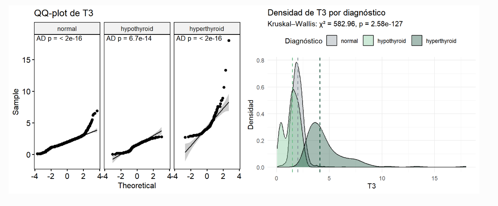
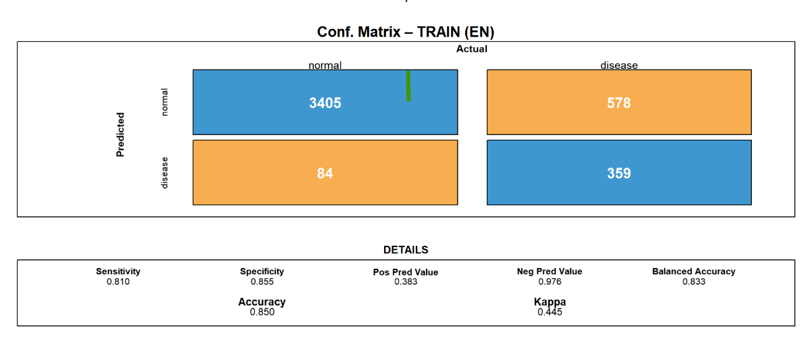
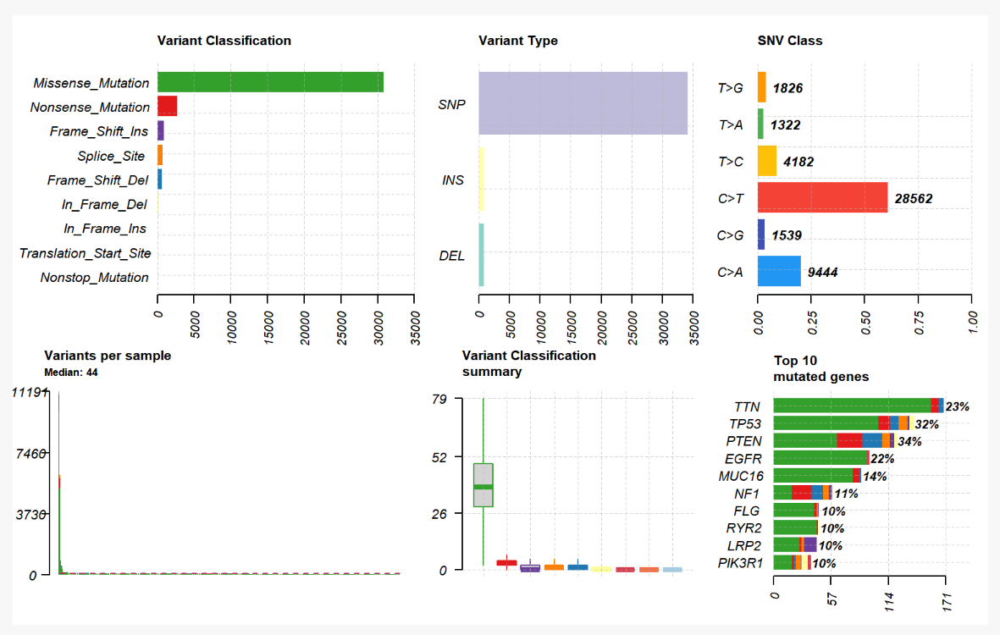
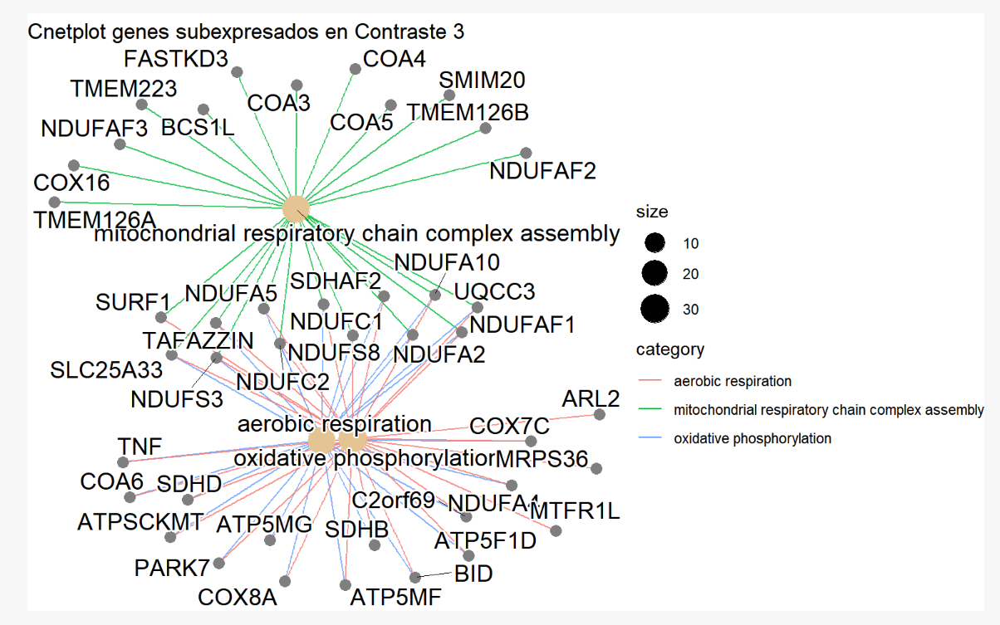
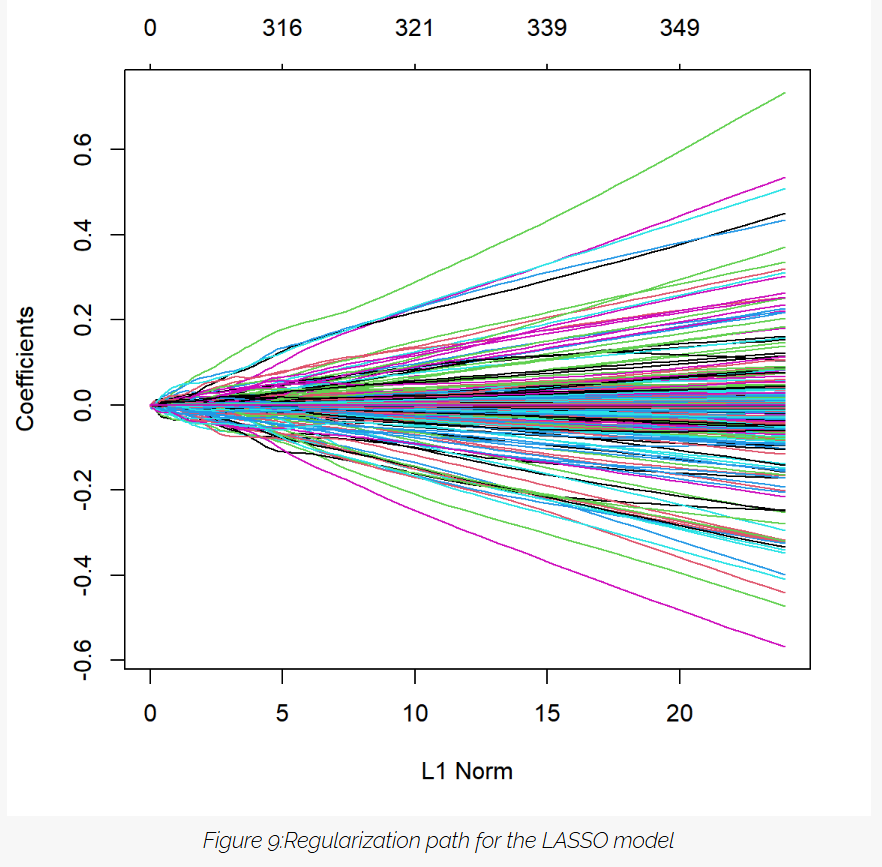

Ingeniería Biomédica · Análisis de datos
Máster en Ingeniería Biomédica, con especialización en análisis de datos en biomedicina
Soy una profesional con experiencia en el análisis de datos y su aplicación en el ámbito de la biomedicina. Mi objetivo es contribuir al desarrollo de soluciones innovadoras que mejoren la salud y el bienestar.
Ver mi CVAnálisis del modelo de difusión y consumo de oxígeno en PhysiCell con replicación/validación cuantitativa en MATLAB, apoyado con procesado de resultados en Python/Excel. Publicado en el Depósito Académico Digital de la Universidad de Navarra (DADUN): https://hdl.handle.net/10171/117005
Tecnologías: Python, MATLAB, PhysiCell
Proyecto en grupo a partir de una cohorte de pacientes con patología tiroidea. Participé en la limpieza de la base de datos y en el análisis de variables clínicas y hormonales. Aplicamos PCA y k-means para explorar patrones y, después, desarrollamos en R dos modelos de Machine Learning supervisado (regresión logística y Elastic Net) para clasificar entre población sana y enfermedad tiroidea y comparamos su rendimiento con distintas métricas.


Tecnologías: RStudio
Proyecto académico en grupo en el que trabajamos con datos públicos de TCGA (glioblastoma) para integrar información clínica, mutaciones y alteraciones en número de copias. Participé en la limpieza y curación de los datos, en el análisis de supervivencia (Kaplan-Meier) y en el estudio de genes clave frecuentemente alterados en glioblastoma. También colaboré en el desarrollo de un modelo de Machine Learning en R para estimar el pronóstico de los pacientes a partir de variables clínicas y genómicas.



Tecnologías: RStudio
Proyecto académico en grupo en el que diseñamos y construimos un espectrofotómetro de bajo coste utilizando Arduino, una fuente de luz y un sensor para medir la intensidad de luz transmitida a través de distintas disoluciones. Colaboré en el montaje del sistema, en la toma de medidas y en la interpretación básica de los resultados, aplicando conceptos de óptica e instrumentación biomédica.
Tecnologías: Arduino
Proyecto en grupo centrado en el desarrollo de un dispositivo portátil basado en Arduino para registrar frecuencia cardiaca y contar pasos en tiempo real mediante un sensor de pulso y un acelerómetro. Los datos se enviaban por serie a Python y se mostraban en un pequeño dashboard programado en Spyder, donde se actualizaban en tiempo real los valores de pulso y otras variables. Participé en la programación, la visualización de los datos y las pruebas de funcionamiento del sistema.
Tecnologías: C, Arduino, Spyder
Puedes contactarme a través de mi correo electrónico: nereagvj@gmail.com o a través de mi perfil de LinkedIn: LinkedIn